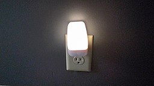

Physical Planning
Remove carpets around their living space, these quickly and often become tripping hazards.
A walk in shower is perfered, but at minimum handrails should be installed to help them in.
Install a dozen or so nightlights for when they inevitably wake up in the middle of the night and roam around.
